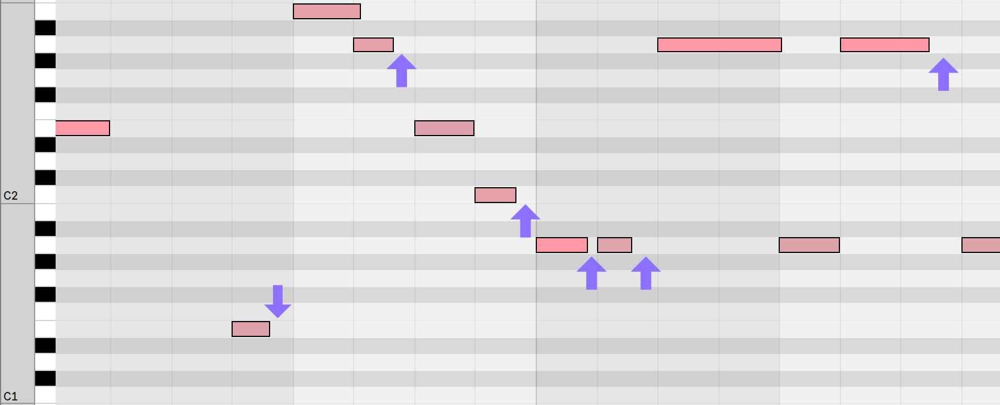

我们再次回顾在上一讲开头所听到的两段对比音频。
微妙欠佳的节奏
出色饱满的节奏
上面是一段略显平庸生硬的演奏，而下面则是律动感极佳的演奏。在掌握了“包络（Envelope）”这一核心概念的当下，重新对比聆听感觉如何？强烈建议大家带着寻找差异的敏锐耳朵，继续阅读下面的解析。
接下来我们将从包络的视角，逐一拆解电吉他、架子鼓、贝斯各乐器之间究竟存在着何等微妙而致命的差异。
 1. 鼓组与包络
1. 鼓组与包络
首先，让我们把承托整首曲目节奏地基的底鼓（Kick）单独抽离出来做对比。
底鼓对比
微妙欠佳的底鼓
出色饱满的底鼓
仅仅单听底鼓，两者的差异竟已如此天差地别。在听感欠佳的那一版中，释音（Release）异常冗长；不仅如此，还通过效果器人为削弱了起音（Attack）的瞬态音量。其直接后果，便是声音失去了清晰锐利的颗粒度，沦为一团含糊发闷的浑浊低频！

孤立单听时或许会让人产生“听起来挺有力量感”的错觉，但一旦置身于乐队合奏织体中，它宣示节奏骨架的瞬态穿透力极弱，导致整个律动显得拖沓迟钝。相比之下，优秀范例中的底鼓包络设计，能让节拍的“瞬态定点”清晰利落地跃然纸上：

单独聆听虽然可能会觉得尾音稍显单薄收敛，但在合奏中却能塑造出无比清爽利落、富有弹性的精湛节奏。
军鼓对比
微妙欠佳的军鼓
出色饱满的军鼓
再看军鼓（Snare）。欠佳的那版释音极短，声音被生硬斩断；而优秀的那版则伴随着恰到好处、富有空气感的军鼓余响。
换言之，优秀演奏通过“底鼓短促干脆，军鼓舒展明亮”的包络互补，将整体律动雕琢得既通透爽快又华美开阔。反观欠佳的版本，“底鼓拖泥带水，军鼓草率短促”，导致两头不讨好——既显得拖沓笨重，又透着莫名的干瘪单薄。 军鼓的余音究竟该长还是该短因曲目风格而异；但在此处吉他与贝斯都在细密刻画快节奏声部的合奏环境下，像前者那样赋予军鼓适度延展的体量，才能与细碎的弹拨乐器构成极佳的听觉张弛反差。
何谓“理想的包络”？
鼓组包络的黄金比例，会随着音乐流派、曲目速度、配器编制的改变而彻底颠覆。最典型的例证，在Trap（陷阱说唱）这类风格中，此前被我们判为反面教材的“超长底鼓（808） × 超短军鼓/拍手”反而是绝对的行业标配：
这背后有着深层的配器考量：在Trap音乐中，带有长释放的808底鼓往往一人分饰两角，兼任了低音贝斯乐器的职能；而在军鼓端，制作人们热衷于探索真实物理鼓组无法企及的奇绝音色，将声音“人工切断到超现实般的极端短促”反而呈现为极富未来科技感的前卫审美。因此在实战中，务必广泛深研目标流派的顶级混音作品，准确把握该风格专属的包络审美定式。
踩镲对比
最后对比踩镲（Hi-hat）：
微妙欠佳的踩镲
出色饱满的踩镲
这听起来确实相当微妙且接近。要洞察其中的乾坤，我们需要对鼓手敲击踩镲的物理手法稍加了解。
槌尖击打（Tip）与 槌颈击打（Shank）
在敲击踩镲时，存在着两种最根本的物理敲击方式：“Tip”与“Shank”。
用鼓槌最前端的圆头小尖精准点击，便是“Tip”：

而放平敲击角度，用鼓槌更粗的槌颈侧面宽阔地扫击镲片边缘，便是“Shank”：

Shank由于接触面积宽广，且触及的是振动幅度最大的镲片边缘，因此能激发更剧烈的物理晃动，催生出泛音四溢的清脆沙沙声——换言之，其衰减时间（Decay）会微妙地更长一些。理解了这一点再回听刚才的音频，答案便一目了然：
优秀演奏通过交替运用Tip与Shank，用衰减时间（Decay）的物理变化来呈现重音与次重音的起伏；而欠佳版本通篇仅用Tip一种机械敲法，单纯依赖敲击力度的死板强弱来生搬硬套重音。
若只靠敲击力度制造重音，音量落差难免过大，在听觉上显得生硬刺耳；而通过保持力度相对平稳、转而改变衰减包络的长短，就能在维持通透轻盈的同时，塑造出行云流水般富有呼吸感的精妙律动。
鼓组整体再聆听
我们再次仅以三大基础打击乐件的织体对比聆听：
包络欠佳的鼓组律动
包络精妙的鼓组律动
所改变的唯独只有包络。然而微小细节层层叠合，当置身于宏观合奏中时，便汇聚成了天壤之别的质感落差。
2. 吉他与包络
紧接着审视电吉他，与踩镲类似，其核心同样根植于物理演奏法所引发的包络蜕变。
松散拖沓的吉他
干脆利落的吉他
出色的演奏采用了“闷音（Mute）”技巧，其声学本质在于缩短衰减时间（Decay），并将延音电平（Sustain）压低甚至归零。在细密富有节律的扫弦乐句中，适度穿插闷音是营造灵动律动感的灵魂秘籍。
微妙欠佳的吉他演奏
出色饱满的吉他演奏
两者的本质分野，正在于是否娴熟融入了闷音包络的动态雕琢。“出色演奏”在音符的斩断与延绵之间形成了张弛有度的剧烈反差，催生出极富弹性的律动；而“欠佳演奏”则通篇软弱绵软、拖泥带水。这种差异最为直观显著。
除此以外，对于吉他而言，音符究竟延伸至何处被截断——即“延音持续时长的精准把控”同样严重支配着律动感。欠佳版本在这一把控上极为粗糙，该收音时不合时宜地拖尾、该留白时又草率切断，在听觉上严重缺乏愉悦流畅感。
3. 贝斯与包络
在贝斯声部中，差异同样聚焦于“音符延展持有时长的把控”上。
微妙欠佳的贝斯
出色饱满的贝斯
在“出色演奏”中，乐手在每个音符之间特意留出了极为微妙的微观间隙：

正如力度（Velocity）铁板一块的演奏毫无律动可言一样，包络形状过于死板划一的贝斯声部同样无法营造出优美的韵律。
十六分音符/八分音符、连音线/跳音/重音记号……这种远比五线谱所能记载的符号更加精微细腻的微观包络差异，才是支配节奏灵魂的核心密码。 这在和弦理论中好比：即便面对完全相同的和弦代号，由于声部排列（Voicing）与具体音响形态的微差，其听觉质感会产生天翻地覆的蜕变，两者在美学上如出一辙。
全体合奏完整复听
在全盘洞悉了上述奥秘之后，再次聆听最初的合奏全貌，其中的玄机便彻底无所遁形：
微妙欠佳的整体律动
出色饱满的整体律动
吉他的优劣大多数人一耳便能洞悉，但底鼓与贝斯的包络玄机若非点破，恐怕很多人很难自觉意识到。对微观细节的极限制炼，正是决定音乐作品专业天花板的关键基石。
Check Point
我们在生理与心理层面能否感受到音乐作品中的“律动弹跳感”，包络在幕后扮演着无可替代的角色。即便节拍重音分布完全一致，依托不同的包络形态，呈现给听者的心象落差亦判若云泥。因此在构建节奏时，必须将包络视为与音量强弱、音高音准同等重要的核心维度。
4. 激发活力的包络创意实战
微小的包络雕琢为节奏注入磅礴生机的经典范例不胜枚举。在此分享几招极具实操价值的进阶秘籍：
用反转倒放（Reverse）积蓄冲刺动能
首先是在现代EDM中极为常见的高阶电鼓技法：
能听出两者的差异吗？这一次，更富律动冲击力的是后者。相比之下前者显得略微寡淡，缺乏势如破竹的冲刺势能。究竟是什么造就了这层质感跨越？
核心机密就在于军鼓的处理。我们单听军鼓声部：
没错！在后者中，每隔一次军鼓在实体起音（Attack）炸裂的前夕，都嵌入了一段**“嘘——”的吸气式蓄力助跑**。这段助跑声，正是将军鼓采样反转倒放（Reverse）所生成的音效。凭借这段预备助跑，军鼓瞬间获得了犹如赛车呼啸贴面掠过般的极速破空感，为整体节奏赋予了无可阻挡的向前冲击势头。
构建丰富立体的包络配比
尤其打击乐（Percussion）声部的包络交融，是搭建曲目律动架构的重中之重。以舞曲中经典的踩镲（Hi-hat）与沙锤（Shaker）搭配为例：
两段音频中沙锤音色完全一致，唯独调换了踩镲的音色包络。显而易见，前者呈现出了高级得多的律动。在前者中，为了不掩盖沙锤长衰减的颗粒余味，特意为踩镲挑选了短促硬朗、收敛利落的紧凑音色；结果细腻松软的沙锤与紧致硬朗的踩镲构成了绝佳的听觉软硬反差，两者相映生辉。 反观后者，踩镲同样选用了长衰减的松散音色；声音形态过于雷同导致彼此互相掩蔽干扰，沙锤原本细致入微的空气残响被吞噬殆尽。
虽然编曲需要具体问题具体分析，但在构思配器时，审慎推敲各乐器包络形态的互补嵌套，是职业音乐人的必修内功。
人工斩断释音（Release）的戏剧悬念
让原本应当自然衰减延绵的声音突然被人为截断，会在听觉上引发震撼人心的心理冲击。最直观易上手的物理范例，莫过于鼓手用手掌瞬间扼住镲片的抓镲止音法（Choke）：
人们在听觉惯性中早已默认碎音镲必然伴随着宏大延绵的泛音，此时突然斩断释音，反而会在寂静中制造出格外扣人心弦的惊叹点。在数字编曲（MIDI制作）中，高端鼓音源通常都会在某个特定的MIDI键位上专门分配带有“Choke”标签的抓镲止音触发器。
再看人声残响的处理。此段给人声施加了极其深邃浓烈的话筒混响与延迟，但在军鼓砸落的刹那将残响音量瞬间归零——使停顿急停（Break）的戏剧悬疑感被无限放大。混响与延迟原本是平滑衰减的自然物理现象，通过门限（Gate）进行人工腰斩，往往能带来极具现代冲击力的冷酷美学。
这是一个更为极致的先锋范例。编制是非常寻常的架子鼓、钢琴与贝斯，但通过对音量包络的极端重塑，赋予了它们“零释音（Release Zero）”或“慢起音（Slow Attack）”等物理乐器原本绝不可能发出的超现实包络形态。
音色与和声框架本极其平庸，但仅仅凭借离经叛道的陌生包络，音乐便瞬间脱胎换骨、极富未来先锋色彩。如果抽掉这些人工包络雕琢，音乐立刻原形毕露、寡淡无味：
包络对塑造音乐灵魂的分量由此可见一斑。
5. 进阶包络参数术语
作为进阶知识补充，除基础的ADSR之外，在此简要介绍几个高阶参数概念。在专业合成器与高级效果器中，这些术语经常会作为可调参数亮相，遇到时作为查阅参考即可。
保持时间（Hold）
在经典的“ADSR”模型中，声音冲至音量顶点后立刻进入衰减（Decay）阶段。然而在某些高阶设备中，支持让音量在极峰阶段持续逗留一段指定时间。这段“起音阶段宣告完成、音量峰值被强行维持的时长”，被称为保持时间（Hold）。

在扩展后的“AHDSR”体系中，音量维持水平横向走势的平坦阶段便扩展成了“Hold（峰值维持）”与“Sustain（延音电平）”两个独立区间。
包络曲线斜率（Slope）
针对起音、衰减与释音，音量从起始点跨越至终点究竟勾勒出怎样的数学曲线形态，在不同乐器与硬件中各具特色。

大体可以归结为上述三类形态。这种几何弧度的弯曲程度在声学工程中被称为斜率（Slope / 曲线形态）。这三类曲线形态均拥有严谨的物理命名：
指数型（Exponential）
起音阶段向上鼓起、而衰减与释音阶段向下深凹的曲线形态，被称为指数型（Exponential）。

这源于数学上的指数函数（$y=a^x$）图谱所勾勒的弯曲轮廓[1]。自然界中的大多数原声原木乐器均遵循这种物理衰减规律，因此很多软硬件合成器默认会将包络锁定在此曲率下。
线性（Linear）
音量呈绝对平直倾斜直线上升或下降的形态，称为线性（Linear）。

对数型（Logarithmic）
与指数型恰成镜像：起音阶段向下凹陷迟缓抬升、而衰减与释音阶段饱满外凸延绵的形态，被称为对数型（Logarithmic）。这对应着数学对数函数（$y=\log_a x$）的几何形态。

平日创作中无需对这些数理术语过于焦虑，正如前文所言，它们主要在精密的声音设计与模块合成器深潜时才会扮演关键参数。
升级你的听觉雷达
在“绪论”中我们曾讲过：“如果脑海中缺乏精准描述声音的语言词汇，我们就无法将音乐清晰洞穿，更无法精准记忆”。包络概念正是这一真理的绝佳印证。仅仅是掌握了这一维度，在你重新审听音乐世界时，耳朵所能捕捉解码的信息量就会呈几何级暴增。
这是在不通乐理的普通听众耳中往往被评价为“不知所云、听不懂好在哪”的前卫电子音乐。然而若用包络的显微镜再次端详，每一个发声体的包络被编排得何等细致入微、何等精密严整，必然会让你叹为观止。 衰减极短以突出起音尖刺的瞬态音、平坦延伸如冰冷地平线的持续音、起音极度缓慢宛如迷雾升腾的垫乐、释音归零刹那消弭的切片、衰减到底后反向膨胀的呼吸音……正如绚烂的和弦织体为乐曲涂抹情感底色一样，千姿百态的包络同样在物理声学维度为音乐织就波澜壮阔的锦缎。从今往后，请让A · D · S · R这4个字母成为你演奏、作曲与编曲时如影随形的忠实伙伴。
总结
- 包络在根本上支配着声音呈现给大脑的听觉质感与微观律动弹性。
- 在编曲混音中审慎推敲各乐器彼此交织的包络平衡，是获取国际化高级工业级声音品质的核心秘钥。